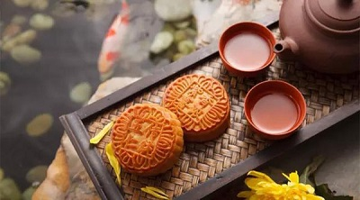
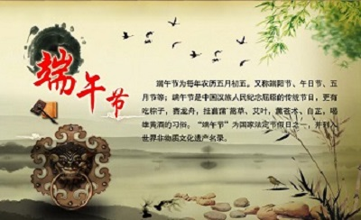
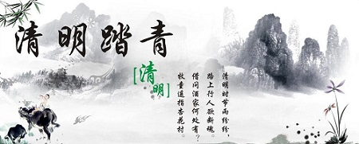

春节

春节，是农历正月初一，又叫阴历年，俗称“过年”。这是我国民间最隆重、最热闹的一个传统节日。春节的历史很悠久，它起源于殷商时期年头岁尾的祭神祭祖活动。按照我国农历，正月初一古称元日、元辰、元正、元朔、元旦等，俗称年初一，到了民国时期，改用公历，公历的一月一日称为元旦，把农历的一月一日叫春节。春节到了，意味着春天将要来临，万象复苏草木更新，新一轮播种和收获季节又要开始。人们刚刚度过冰天雪地草木凋零的漫漫寒冬，早就盼望着春暖花开的日子，当新春到来之际，自然要充满喜悦载歌载舞地迎接这个节日。
中秋节
中秋节吃月饼就像西方人圣诞节吃百果馅饼一样，是必不可少的。圆圆的月饼中通常包有香甜的莲子馅或是红豆馅，馅的中央还会加上一个金黄的咸鸭蛋黄来代表月亮。而月亮正是中秋节庆祝的主题。每年农历8月15日人们一起庆祝中秋，据说这一天的月亮是一年中最亮最圆的。
中秋节习俗的来历：说的是当时地球被10个太阳包围着。有一天10个太阳同时出现在天空中，巨大的热量几乎把地球烤焦了。多亏一位名叫后羿的神箭手射下了9个太阳，地球才被保住。为了奖励后羿，王母娘娘赐给后羿一种长生不老药，但是王母警告他必须正当使用。然而后羿没有理会王母娘娘的警告，他被名利冲昏了头脑，变成了一个暴君。后羿美丽的妻子嫦娥对他的暴行再也不能袖手旁观，于是她偷走了后羿的长生不老药，飞到月亮上逃避后羿的狂怒。从此就有了关于月宫仙子嫦娥，这个月亮上的美丽女人的传说。
端午节
端午节是古老的传统节日，始于中国的春秋战国时期，至今已有2000多年历史。据《史记》“屈原贾生列传”记载，屈原，是春秋时期楚怀王的大臣。他倡导举贤授能，富国强兵，力主联齐抗秦，遭到贵族子兰等人的强烈反对，屈原遭馋去职，被赶出都城，流放到沅、湘流域。他在流放中，写下了忧国忧民的《离骚》、《天问》、《九歌》等不朽诗篇，独具风貌，影响深远（因而，端午节也称诗人节）。公元前278年，秦军攻破楚国京都。屈原眼看自己的祖国被侵略，心如刀割，但是始终不忍舍弃自己的祖国，于五月五日，在写下了绝笔作《怀沙》之后，抱石投汨罗江身死，以自己的生命谱写了一曲壮丽的爱国主义乐章。
清明节
清明节是一个纪念祖先的节日。主要的纪念仪式是扫墓，扫墓是慎终追远、郭亲睦邻及行孝的具体表现；基于上述意义，清明节因此成为华人的重要节日。 清明节是在仲春和暮春之交，也就是冬至后的106天。扫墓活动通常是在清明节的前十天或后十天。有些地域的人士的扫墓活动长达一个月。 清明的由来：谈到清明节，有点历史知识的人，都会联想到历史人物介子椎。据历史记载，在两千多年以前的春秋时代，晋国公子重耳逃亡在外，生活艰苦，跟随他的介子椎不惜从自己的腿上割下一块肉让他充饥。后来，重耳回到晋国，作了国君（即晋文公，春秋五霸之一），大事封赏所有跟随他流亡在外的随从，惟独介子椎拒绝接受封赏，他带了母亲隐居绵山。 晋文公无计可施，只好放火烧山，他想，介子椎孝顺母亲，一定会带着老母出来。谁知这场大火却把介子椎母子烧死了。为了纪念介子椎，晋文公下令每年的这一天，禁止生火，家家户户只能吃生冷的食物，这就是寒食节的来源。 寒食节是在清明节的前一天，古人常把寒食节的活动延续到清明，久而久之，清明取代了寒食节。拜介子椎的习俗也变成了清明扫墓的习俗了。无论以何种形式纪念，为了使纪念祖先的仪式更有意义，我们应该让年轻一代的家庭成员了解先人过去的奋斗历史，当然，还要学习介子椎宁死不屈的气节。
联系我们
TEL：18228075165
QQ：2044369821
微信关注我们：